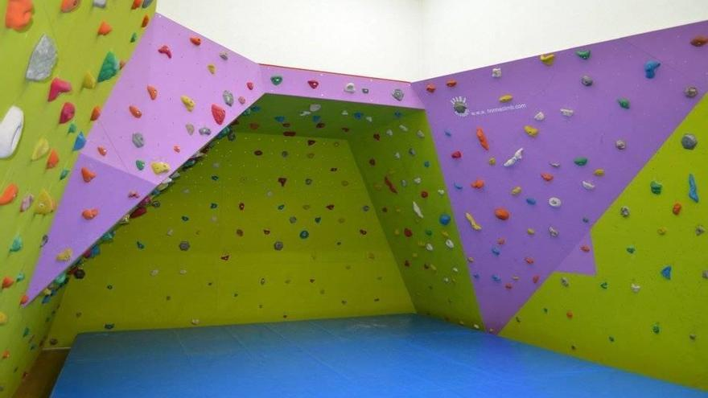

El rocódromo Miriam García Pascual está situado en las instalaciones deportívas del Ereta. Dispone de una vía de subida de 15m. de altura por 2m. de ancho. 2 vías más de subida de 14,5m. de altura por 2,5m de anchura. Cuenta también con 3 filas de troncos de 16m. de altura para la simulación de escalada en hielo. Una zona de boulder con 3 secciones, un MOON BOARD MASTER y un autodescensor.
info práctica investigar en el mismo rocódromo
